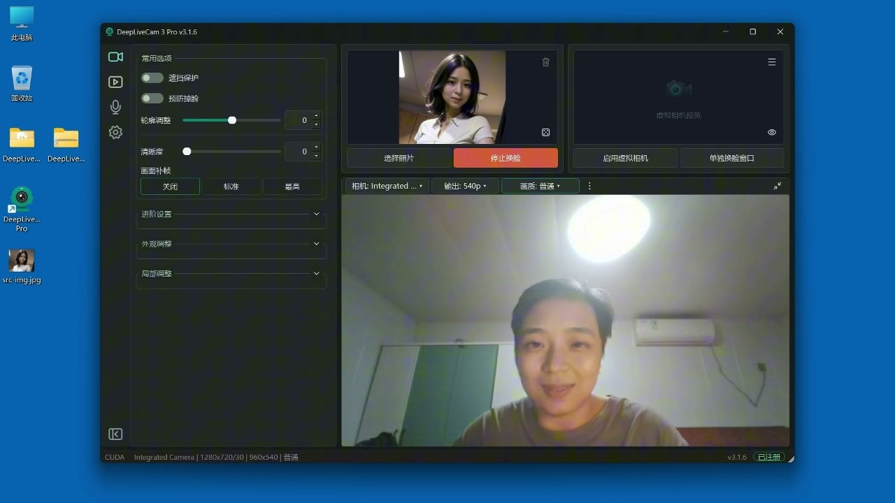
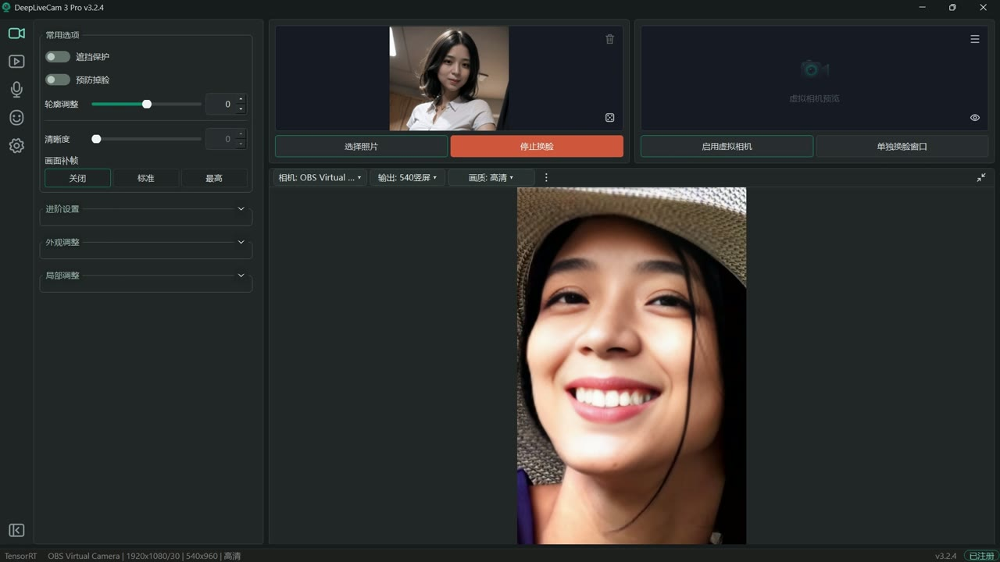

下面三篇是原作者的中文教程，界面跟咱们这份出货版一致。演示视频录制版本较早，个别按钮的名字和位置跟 3.4.0 略有出入。
先看第一篇，够用九成场景。

入门操作 · 约 4 分钟 · 演示 57 秒
从选择照片、启动预览开始，通过 DLC-Pro 虚拟摄像头把处理后的画面传入 Telegram 或 WhatsApp。

直播设置 · 约 5 分钟 · 演示 26 秒
捕捉 DeepLiveCam 的独立输出窗口，组合 OBS 场景，再用于直播或视频通话；同时说明 Windows 11 下的虚拟摄像头接入方式。

进阶流程 · 约 5 分钟 · 演示 1 分 22 秒
在 OBS 中播放本地视频，把 OBS Virtual Camera 作为 DeepLiveCam 的输入，再通过 DLC-Pro 把换脸结果传入 Telegram。
这一步跟原作者那边不一样：咱们的注册和发卡走我们自己的服务器。
内置虚拟相机需要 Windows 11。Windows 10 用「单独换脸窗口」，然后在 OBS 里加「窗口采集」选这个窗口。
先把「遮挡保护」「预防掉脸」打开；轮廓调整别拉太高；画质档位换成清晰或高清（NVIDIA）。光源比参数更影响效果。
模型和高清、变声、头像动画组件是首次运行按需下载的，走原作者线路。网络慢就多等一会儿，别中途关掉。
不会。这份出货版的自动更新通道已经冻住，避免哪天更新完把中文补丁和注册通道冲掉。
到期会自动锁回未注册状态，素材和设置都不丢。找我续期，兑换后最长 60 秒内自动解锁，不用重装。
不会。图片和实时画面都在本机处理。只有模型下载、注册激活要联网。